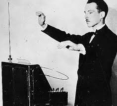

Tying Computer Vision with Audio: An Attempt to Implement a Virtual Theremin
Daniel Monahan, Sweekriti Satpathy, Shan Sikdar
Daniel Monahan, Sweekriti Satpathy, Shan Sikdar
In the 1920s, a Russian physicist invented an instrument that was made up of two metal antennas that sensed the relative position of the user's hands. The instrument used oscillators to control frequency with one hand and amplitude with the other.
Currently, hand gesture recognition is a common problem for Computer Vision. In our research, we found a few interesting papers related to hand gesture recognition. Hand gesture recognition systems are used to help people such as the visually impaired or to help people in therapy. Solanki and Desai from Gujarat Technological University had even attempted to make a remote control for home appliances. In Leeds Metropolitan University, a researcher had previously done gesture interaction for electronic music performance
Our main motivation was to experiment with ways to connect audio sounds with hand gesture recognition. If we could connect hand gesture information to audio output, then this could add a new dimension to recognition systems. It could also be used in fields such as occupational therapy, or to create systems to help the visually impaired. We looked to the Theremin as a source of inspiration. We found papers such as Svilen Dimitrov's "Analyzing Theremin Sounds for Touch Free Gesture Recognition", but often the methods suggested involved looking into systems and hardware. We decided we wanted to implement a system that one could use with a simple web camera.
The goal of our project was to try and emulate the functionalities of the Theremin. This involved sub-problems of being able to control volume with one hand and controlling pitch with the other. The video version of this "Theremin Problem" is an interesting problem because there is a loss of information since a simple web camera does not contain information about the z-axis. A real Theremin can use oscillators to track the user's hands in all three dimensions. However, a simple camera does not have any information on depth. A virtual Theremin also has to account for possible inaccuracies in hand position detection, hand movement detection, changes in lighting, and changes in the background. Furthermore, after processing all visual data, a virtual Theremin needs to somehow use that information to reliably reflect a change in audio output.
We decided to use a python library called pyAudio.
We used this library to open an audio stream . Any audio segement that is fed into the stream, the library automatically plays the segment through the computer's audio card.
Sample code of just playing any audio:
p = pyaudio.PyAudio()
stream = p.open(format=p.get_format_from_width(2),
channels=1,
rate=44100,
output=True)
input = createA440(epsilon=0,note=0)
stream.write(input)
To actually generate the audio we wished to play, we generate a sine wave of the appropriate frequency (by default 440Hz, concert A). To ensure the audio plays for long enough, we generate the sine wave over a number of samples, which is user defined.
Before we could output any sound, we first needed to be able to segment the hands. To do this, we utilized hand segmentation via skin detection similar to the method used in the hand gesture homework earlier this semester. To make processing of the image more manageable, the image was split in half down the center into two separate images.
The first half of the image was used to control the volume of the audio. The segment was then iterated through pixel by pixel. For each pixel, the RGB values were taken and thresholding was performed on their values based for skin detection. This resulted in a grayscale image, and the contours of the grayscale image were obtained using the opencv findContours function.
A function was then written to iterate through all contours in order to find the one with the largest contour. The largest contour was then taken to be the left hand. We decided that the centroid of the contour would be the best data to be used in controlling the volume. (We also played around with the geometry of the bounding box and other geometries based on the convex hull and defect points but these proved to be not useful.) To get the centroid we first got the moments and then used the equation found in papers and in class:
Once the centroid was obtained we took its relative postion in the image and passed that ratio into a logmarthimic function similar to the decibel scale to create a smooth transition in volume as a hand moved up and down on the screen. Several equations were experimented with but the one shown below worked the best.
From there we used the value s, to scale all the amplitudes in the frame. A downsampled A note was created at 440 hertz. Then the music sample and the value s, were passed to a function that unpakced the music data, mulitiplied everything by the scale factor s and then repacked to a music data array. After that the array was then fed into the music stream.
To be able to detect a vibrato gesture from the hand we decided to use optical flow. For the optical flow function we decided to use Farneback's optical flow algorithm as shown to us in lab. We tried experimenting by using optical flow on many different input images. We first tried on a normal grayscale image but the numbers were varying wildly and changes in lighting and people moving in the background. We then tried using optical flow on a skin detected image. This worked a little better, but was still catching way to much extraneous information in the background. As a result we decided to use Gaussian Blur to see if we could smooth out the differences in lighting. We finally found the largest contour of the pitch hand and limited the optical flow change to the region around the contour. This had the best performance of all. (Pictures to be shown in the Experiments and Results) section.
The optical flow matrix returned by the Farneback's optical flow algorithm was essentially a matrix of all flow vectors for the given image. We had a matrix the size of the image with each entry as a vector corresponding to the optical flow for that pixel. We needed some way to get from this matrix to some actual numerical value in order to be able to create the vibrato. After doing some research we felt that taking the operator norm of the optical flow matrix was best. The operator norm is used often in engineering and applied mathematics to measure the size of linear operators. The formal definition of the operator norm from Wikipedia is the following:
Where the norm in both the domain and codomian can be specifed seperately.
We first took the optical flow matrix and for every entry computed the l2 norm of every vector, to create a new matrix. We then experimented with different norms but finally decided to use the l2 norm. Which is also equivelent of finding the maximum singular value for the matrix (wikipedia and Introduction to Compressive Sensing by Holdger). Python's numpy library fortunately provides an optimized norm function. This was important because when we tried to implement it ourselves, the code was slowing down the overall program too much.
Vibrato is the musical term for a regular, slight change in pitch of a sound. For instance, violinists will slightly move their finger back and forth on the string to acheive the vibrato effect. This effect is an important addition to music, as it gives a more life-like quality to the sound.
Using the l2 norm to obtain a quantification of the optical flow matrix proved to be helpful. In the cases that the hand was stationary, the norm value was very low always below a 1000. In the case of hand movement the norm quickly spiked up to over 1000. Using this as a detection of a hand gesture for vibrato we now needed a way to turn this value into an actual vibrato sound.
To acheive the vibrato effect, we used a low frequency oscillator (LFO). An LFO is an oscillator with a frequency usually below the range of human hearing, so about 20 Hz or less. To achieve vibrato, the LFO is applied to the frequency of the actual audio wave we are generating. We first create the LFO as a simple sine wave with a frequency of around 2 Hz. To get varying levels of vibrato, we multiply it by the l2 norm we generated from our optical flow (normalized to a value that makes sense for the current pitch). We then add it to the frequency parameter for the audio sine wave, resulting in a vibrato effect.
For pitch detection we decided to we would like the position of the pitch hand to be able to loosely recreate the pictches from the blues scale.
We found the frequencies for all six notes in the C blues scale: 261.63,311.13,349.23,269.99,392.0,440.0,466.16,523.25. These values were then put into
an array. Then the centroid of the pitch hand was discovered similar to volume hand process listed up above. The pitch image was then subdivided into interval regions
based on the number of notes in the scale.The relative postion of the centroid divided by the interval size gave which index in the array of notes to access.
The value was then passed on to a function to create a sin wave of the given note frequency. The return value of this function was then fed to the PyAudio Stream.
Overall each component of the Theremin individually was pretty successful. A few equations like the amplitude and flow could be fine-tuned but for the most part work really well. The volume pans in and out, the vibrato responds to hand movements, and the pitch can change based on the height of the left hand. All of this works on a simple laptop web camera. While it does not improve on the state of the art based on the paper we read, it also does not require new hardware. In this respect we think our code is a success.
While the Theremin itself might not be directly applicable, individual parts with their audio counterparts could be used for other applications. For instance the optical flow gesture recognition could be used to quantify body movement. Moments and centroid location could be further used to play a warning sound if a hand or another object is leaving an important part of the camera view.
The parts all together don’t work very well, the application becomes too slow. The vibrato and pitch components also currently require different time length in order to hear the different effects. As a result the code works if you run each part separately. The audio streaming also has gaps in the stream so the virtual Theremin doesn’t really sound like a continuous instrument. However this could also be fixed by using a sound mimicking an instrument that needs to be plucked (e.g. guitar)
After doing some research, we realized that that the best way to fix all these problems would probably to turn this into a concurrent application by using threads. This would mean that the audio stream and a few variables would have to be shared resources requiring mutexes and locks. We would also possibly need to implement a client/server model with a circular buffer as well. Due to time constraints and not wanting to crash the project before the demo, we have decided to not implement the concurrent part of this application. However the code is structured in such a way that converting to a concurrent style should not be problematic at all.
Our system has its strengths, but also falls short in some ways of what we hoped for. The system currently generates sound in short intervals, with each successive change interrupting the playing sound. The result is a series of beeps that change pitch and volume, rather than a continous stream of audio. We discovered that continous, real-time audio synthesis is a difficult problem which could possibly be improved upon with more time and development, possibly with research into existing methods.
While our system has its shortcomings, it also is a good first step into a computer vision based audio system. We were able to successfully tie the volume and pitch of the generated sound to the position of an object in the image, as well as tie the amount of vibrato to the amount of motion occuring. These are significant results, that can be adapted for many other uses, such as systems for the visually impaired. In addition, further development could result in other types of sounds and gestures for other vision based electronic instruments.